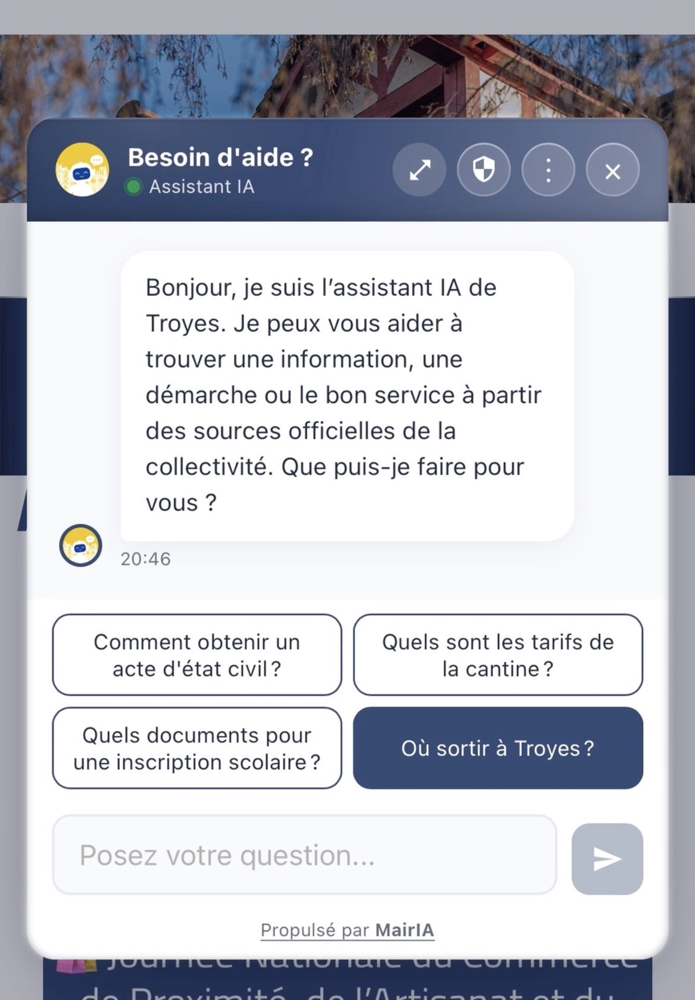

<meta charset="utf-8">
<meta name="robots" content="noindex, nofollow, noarchive">
<title>MairIA Deck Presentation</title>
<link rel="preconnect" href="https://fonts.googleapis.com">
<link rel="preconnect" href="https://fonts.gstatic.com" crossorigin>
<link rel="stylesheet" href="https://fonts.googleapis.com/css2?family=DM+Sans:opsz,wght@9..40,300;9..40,400;9..40,500;9..40,600;9..40,700&family=Syne:wght@600;700;800&display=swap">
<style>
/* Scène : canevas fixe 1920×1080 mis à l'échelle, une idée par slide, charte MairIA V6 (deck single-theme assumé). */
:root{
  --navy:#2E3A7A; --night:#1B2450; --deep:#222C5E; --gold:#C9A84C; --gold-soft:#F3ECD8;
  --paper:#F7F8FC; --ink:#1A1F3D; --muted:#5B6079; --line:#E2E5F0; --tint:#EEF0F7;
  --lib:#2E3A7A; --sec:#4B5876; --pil:#A8323A; --lib-d:#9DB0F0; --sec-d:#F4EFE3; --pil-d:#F07A7E;
  --ok:#2C7D56; --ok-soft:#E3F2EA;
  --display:'Syne','Arial Black',system-ui,sans-serif; --body:'DM Sans',system-ui,-apple-system,'Segoe UI',sans-serif;
  color-scheme:light;
}
*{margin:0;padding:0;box-sizing:border-box}
html,body{height:100%;background:#0E1230;font-family:var(--body);color:var(--ink);-webkit-font-smoothing:antialiased;overflow:hidden}
.deck{width:1920px;height:1080px;position:absolute;left:0;top:0;transform-origin:0 0}
.slide{position:absolute;inset:0;overflow:hidden;background:var(--paper);padding:110px 150px 110px;display:flex;flex-direction:column;opacity:0;visibility:hidden;transition:opacity .4s ease}
.slide.on{opacity:1;visibility:visible}
.slide::before{content:"";position:absolute;left:0;top:0;height:6px;width:var(--p,10%);background:var(--gold)}
.slide.dark{background:var(--night);color:#fff}
.foot{position:absolute;left:150px;right:150px;bottom:44px;display:flex;justify-content:space-between;align-items:center;font-size:17px;letter-spacing:.14em;text-transform:uppercase;color:var(--muted)}
.dark .foot{color:#9EA6CF}
.brand{font-family:var(--display);font-weight:800;font-size:28px;letter-spacing:-.01em;text-transform:none;color:var(--navy)}
.brand span,.wm span{color:var(--gold)}
.dark .brand{color:#fff}
.eyebrow{font-size:20px;letter-spacing:.24em;text-transform:uppercase;font-weight:600;color:var(--gold);margin-bottom:28px}
h1,h2{font-family:var(--display);color:var(--navy);text-wrap:balance}
.dark h1,.dark h2{color:#fff}
h2{font-weight:700;font-size:70px;line-height:1.06;letter-spacing:-.012em}
h2 em,h1 em{font-style:normal;color:var(--gold)}
.lead{font-size:32px;line-height:1.42;font-weight:300;max-width:1250px;margin-top:26px}
.lead b{font-weight:600;color:var(--navy)}
.dark .lead{color:#DCE0F2}.dark .lead b{color:#fff}
.src{position:absolute;left:150px;right:150px;bottom:92px;font-size:17px;line-height:1.45;color:var(--muted)}
.dark .src{color:#9EA6CF}
.tag{display:inline-block;font-size:13px;font-weight:700;letter-spacing:.14em;text-transform:uppercase;padding:6px 10px;border-radius:6px;line-height:1;vertical-align:2px;margin-right:10px}
.tag.p{background:var(--ok-soft);color:var(--ok)} .tag.m{background:var(--gold-soft);color:#8A6D1F} .tag.a{background:var(--tint);color:var(--navy)} .tag.o{background:#FBE7DA;color:#9A4A17}
.dark .tag.p{background:#1F4D3A;color:#9FE3BF}.dark .tag.m{background:#4A4020;color:#F0D98C}.dark .tag.a{background:#35407F;color:#DCE0F2}
.big{font-family:var(--display);font-weight:800;line-height:1;letter-spacing:-.02em;color:var(--navy);white-space:nowrap;font-variant-numeric:tabular-nums}
.dark .big{color:#fff}
.big .u{font-size:.4em;color:var(--gold);margin-left:8px;letter-spacing:0}
.lbl{font-size:23px;line-height:1.4;color:var(--muted);margin-top:14px}.lbl b{color:var(--ink);font-weight:600}
.dark .lbl{color:#C7CCE6}.dark .lbl b{color:#fff}
.grow{flex:1}
.pillar{font-family:var(--display);font-weight:800;font-size:118px;line-height:.95;letter-spacing:-.03em}
.t-lib{color:var(--lib)}.t-sec{color:var(--sec)}.t-pil{color:var(--pil)}
.dark .t-lib{color:var(--lib-d)}.dark .t-sec{color:var(--sec-d)}.dark .t-pil{color:var(--pil-d)}
.tri{display:flex;gap:6px;margin-top:22px}.tri i{display:block;width:56px;height:6px;border-radius:3px}
.b-lib{background:var(--lib-d)}.b-sec{background:var(--sec-d)}.b-pil{background:var(--pil-d)}
.paper .b-lib{background:var(--lib)}.paper .b-sec{background:#C9CEDF}.paper .b-pil{background:var(--pil)}
.on .tri i{animation:grow .9s cubic-bezier(.2,.7,.2,1) both}.on .tri i:nth-child(2){animation-delay:.12s}.on .tri i:nth-child(3){animation-delay:.24s}
@keyframes grow{from{transform:scaleX(0);transform-origin:left}to{transform:scaleX(1);transform-origin:left}}
.triad{font-family:var(--display);font-weight:800;font-size:44px;white-space:nowrap}.triad span{margin-right:.3em}
.media{position:relative;border-radius:22px;overflow:hidden;background:#0E1230;box-shadow:0 30px 70px rgba(14,18,48,.28)}
.media video,.media img{display:block;width:100%;height:100%;object-fit:cover}
.media .cap{position:absolute;left:16px;bottom:14px;font-size:15px;letter-spacing:.06em;color:#fff;background:rgba(14,18,48,.72);padding:7px 12px;border-radius:8px}
.media .miss{position:absolute;inset:0;display:flex;align-items:center;justify-content:center;text-align:center;color:#C7CCE6;font-size:22px;padding:30px}
.hud{opacity:.18;transition:opacity .2s;position:fixed;right:16px;bottom:12px;font:500 13px var(--body);color:#9EA6CF;letter-spacing:.1em;z-index:9;display:flex;gap:12px;align-items:center}
.hud button{font:600 12px var(--body);letter-spacing:.1em;text-transform:uppercase;color:#C7CCE6;background:rgba(255,255,255,.08);border:1px solid rgba(255,255,255,.18);border-radius:6px;padding:5px 9px;cursor:pointer}
.hud button:focus-visible{outline:2px solid var(--gold);outline-offset:2px}
.hud:hover,.hud:focus-within{opacity:1}#hud-n{display:none}
@page{size:1920px 1080px;margin:0}
@media print{html,body{background:none;overflow:visible;height:auto}.deck{transform:none!important;position:static}.slide{position:relative;opacity:1;visibility:visible;break-after:page;height:1080px}.hud{display:none!important}
.s-end .ph{opacity:0!important}.s-end .ph-sign{opacity:1!important;visibility:visible!important}}
@media (prefers-reduced-motion:reduce){.slide{transition:none}.on .tri i{animation:none}}
</style>
<main class="deck"><style>
.s-cover{justify-content:center}
.s-cover .wm{font-family:var(--display);font-weight:800;font-size:220px;letter-spacing:-.035em;line-height:.9;color:var(--navy)}
.s-cover .sub{font-family:var(--display);font-weight:700;font-size:62px;color:var(--navy);margin-top:48px}
.s-cover .band{align-self:flex-start;margin-top:40px;background:var(--night);border-radius:18px;padding:24px 38px 22px}
.s-cover .band .t-lib{color:#8AA2F2}.s-cover .band .t-sec{color:#FBF8F1}.s-cover .band .t-pil{color:#EF6B70}
.s-cover::after{content:"";position:absolute;right:-220px;top:120px;width:820px;height:820px;border-radius:50%;border:2px solid var(--line);box-shadow:0 0 0 100px rgba(46,58,122,.025),0 0 0 200px rgba(46,58,122,.02)}
.s-cover .by{position:absolute;left:150px;bottom:110px;font-size:26px;color:var(--muted)}.s-cover .by b{color:var(--navy);font-weight:600}
.story{display:grid;grid-template-columns:1fr 1fr;gap:90px;margin-top:40px;align-items:start}
.when{font-family:var(--display);font-weight:800;font-size:40px;color:var(--gold);margin-bottom:28px}
.tabs{display:flex;flex-direction:column;gap:14px}
.tabs div{background:#2A3570;border:1px solid #3A4585;border-radius:12px;padding:16px 22px;font-size:25px;color:#DCE0F2;display:flex;justify-content:space-between}
.tabs div small{color:#9EA6CF;font-size:19px}
.tabs .shut{background:#3B2230;border-color:#7A3A48;color:#F6C9CF}
.calls{display:grid;grid-template-columns:repeat(4,1fr);gap:16px}
.calls i{font-style:normal;height:92px;border-radius:14px;background:#2A3570;border:1px solid #3A4585;display:flex;align-items:center;justify-content:center;font-size:34px;color:#DCE0F2}
.s-cas .cas{display:grid;grid-template-columns:1fr 1fr;gap:40px;margin-top:50px}
.s-cas .case{background:#2A3570;border:1px solid #3A4585;border-radius:22px;padding:36px 40px}
.s-cas .when{font-size:24px;margin-bottom:12px}
.s-cas h3{font-family:var(--display);font-weight:700;font-size:40px;line-height:1.1;color:#fff}
.s-cas .case p{font-size:23px;line-height:1.45;color:#DCE0F2;margin-top:12px}
.s-cas .qs{display:flex;flex-wrap:wrap;gap:10px;margin-top:20px}.s-cas .qs span{border:1.5px solid var(--gold);color:#F0D98C;border-radius:30px;padding:8px 16px;font-size:19px;font-weight:600}
.s-cas .cons{margin-top:50px;border-left:4px solid var(--gold);padding-left:28px}
.s-cas .big1{font-family:var(--display);font-weight:700;font-size:30px;line-height:1.25;color:#fff}.s-cas .big1 b{color:var(--gold);font-weight:700}
.s-cas .sub1{font-size:21px;line-height:1.45;color:#9EA6CF;margin-top:10px}
.petites{position:absolute;left:150px;bottom:96px;font-size:24px;color:#9EA6CF}.petites b{color:#DCE0F2;font-weight:600}
.same{font-family:var(--display);font-weight:700;font-size:40px;line-height:1.2;color:#fff;margin-top:40px}.same b{color:var(--gold)}
.prob{display:grid;grid-template-columns:1.05fr 1fr;gap:80px;margin-top:44px;align-items:center}
.scatter{position:relative;height:500px}
.scatter .q{position:absolute;left:50%;top:50%;transform:translate(-50%,-50%);width:520px;background:var(--navy);color:#fff;font-family:var(--display);font-weight:700;font-size:30px;line-height:1.3;padding:30px 36px;border-radius:22px;text-align:center;z-index:2}
.frag{position:absolute;background:#fff;border:1px dashed #C4C9DD;color:var(--muted);font-size:21px;padding:12px 20px;border-radius:12px;white-space:nowrap}
.f1{left:0;top:40px;transform:rotate(-3deg)}.f2{right:0;top:20px;transform:rotate(2deg)}.f3{left:-10px;top:400px;transform:rotate(2deg)}
.f4{right:20px;top:410px;transform:rotate(-2deg)}.f5{left:250px;top:-40px;transform:rotate(-1deg)}.f6{left:230px;bottom:-40px;transform:rotate(1.5deg)}
.nums{display:flex;flex-direction:column;gap:30px;border-left:2px solid var(--line);padding-left:60px}
.nums .k{font-size:17px;letter-spacing:.18em;text-transform:uppercase;font-weight:700;color:var(--gold)}
.nums .big{font-size:100px}.nums .calc{display:block;font-size:16px;color:var(--muted);margin-top:4px}.nums .lbl{margin-top:6px;font-size:22px}
.pill-grid{display:grid;grid-template-columns:720px 1fr;gap:70px;align-items:center;flex:1}
.pill-grid ul{list-style:none;display:flex;flex-direction:column;gap:22px;margin-top:44px}
.pill-grid li{font-size:29px;line-height:1.35;font-weight:300;padding-left:30px;position:relative}
.pill-grid li::before{content:"";position:absolute;left:0;top:15px;width:12px;height:12px;border-radius:50%;background:var(--gold)}
.pill-grid li b{font-weight:600;color:var(--navy)}
.s-lib .pill-grid ul{gap:26px;margin-top:40px}.s-lib .pill-grid li b{display:block;font-family:var(--display);font-weight:700;font-size:34px}
.s-lib .pill-grid li small{display:block;font-size:24px;line-height:1.4;color:var(--muted);margin-top:6px}
.chain{display:flex;flex-wrap:wrap;gap:8px 10px;align-items:center;margin-top:40px;font-size:19px;font-weight:600;color:var(--navy)}
.chain span{background:var(--tint);border-radius:30px;padding:9px 16px}.chain span:last-child{background:var(--gold);}.chain i{font-style:normal;color:var(--gold);font-weight:700}
.s-lib .media{aspect-ratio:2008/1440;width:100%;box-shadow:none}
.s-lib .media.shot{aspect-ratio:1200/1725;height:860px;width:auto;justify-self:center;background:none}
.s-lib .media.v{aspect-ratio:750/1110;width:570px;justify-self:center}
.s-lib .lib-slot{display:flex;justify-content:center;align-items:center;min-width:0}
.s-lib .lib-still{display:none}.s-lib .lib-motion{width:100%}.s-lib .lib-motion video{transform:translateX(1.3%) scale(1.03)}
@media print{.s-lib .lib-motion{display:none!important}.s-lib .lib-still{display:block!important}}
</style>

<section style="--p:8.33%" class="slide s-cover">
  <div class="wm">Mair<span>IA</span></div>
  <div class="band"><p class="triad"><span class="t-lib">Libérez.</span><span class="t-sec">Sécurisez.</span><span class="t-pil">Pilotez.</span></p></div>
  <div class="sub">L'assistant IA des collectivités !</div>
  <div class="foot"><span class="brand">Mair<span>IA</span></span><span>mairia.fr</span></div>
</section>

<section style="--p:16.67%" class="slide dark s-cas">
  <div class="eyebrow">Le point de départ</div>
  <h2>Deux situations du quotidien. <em>Le même parcours compliqué.</em></h2>
  <div class="cas">
    <div class="case">
      <div class="when">Mi-août · avant un voyage</div>
      <h3>Passeport perdu.</h3>
      <p>La mairie est ouverte, mais les équipes sont réduites pour l'été. Il faut refaire ses papiers, vite.</p>
      <div class="qs"><span>Quelle démarche ?</span><span>Quels justificatifs ?</span><span>Quel service ?</span></div>
    </div>
    <div class="case">
      <div class="when">Dimanche soir · avant la rentrée</div>
      <h3>Inscription périscolaire oubliée.</h3>
      <p>Le dossier est quelque part entre une rubrique du site, le portail famille et un règlement en PDF.</p>
      <div class="qs"><span>Quels papiers ?</span><span>Quel dossier ?</span><span>Où s'inscrire ?</span></div>
    </div>
  </div>
  <div class="cons">
    <p class="big1">L'information est souvent déjà en ligne. <b>La trouver mobilise citoyens et agents.</b></p>
    <p class="sub1">À l'accueil, parfois une ou deux personnes face aux mêmes questions, jour après jour. Et dans les petites communes, parfois une seule permanence par semaine.</p>
  </div>
  <div class="foot"><span class="brand">Mair<span>IA</span></span><span>Scènes illustratives · 02 / 12</span></div>
</section>

<section style="--p:25.00%" class="slide">
  <div class="eyebrow">Le problème</div>
  <h2>L'information existe.<br>Mais elle est <em>dispersée</em>.</h2>
  <div class="prob">
    <div class="scatter">
      <div class="q">« Je ne peux pas emporter mes encombrants. Comment faire ? »</div>
      <div class="frag f5">Site de la ville</div>
      <div class="frag f2">Site de l'intercommunalité</div>
      <div class="frag f1">PDF de règlement, 12 pages</div>
      <div class="frag f3">Portail thématique</div>
      <div class="frag f4">service-public.fr</div>
      <div class="frag f6">Standard téléphonique</div>
    </div>
    <div class="nums">
      <div class="k">Côté services · Troyes et TCM</div>
      <div><div class="big">250</div><div class="lbl"><b>appels par jour</b> · standard et état civil, Ville de Troyes</div></div>
      <div><div class="big">75</div><div class="lbl"><b>appels par jour</b> · Pôle Famille, et 10 000 courriels par an</div></div>
      <div><div class="big">≈ 800</div><div class="lbl"><b>appels par mois</b> · déchets, Troyes Champagne Métropole<small class="calc">Moyenne mensuelle calculée à partir de 9 613 appels annuels déclarés.</small></div></div>
    </div>
  </div>
  <div class="foot"><span class="brand">Mair<span>IA</span></span><span>03 / 12</span></div>
</section>

<section style="--p:33.33%" class="slide s-lib">
  <div class="pill-grid">
    <div>
      <div class="pillar t-lib">Libérez.</div>
      <div class="tri paper"><i class="b-lib"></i></div>
      <ul>
        <li><b>Une réponse, sans attendre.</b><small>MairIA accompagne plusieurs citoyens simultanément, 24&nbsp;h/24 et 7&nbsp;j/7.</small></li>
        <li><b>Moins d'appels répétitifs.</b><small>Le citoyen qui obtient sa réponse n'a plus besoin d'appeler le standard pour cette question.</small></li>
        <li><b>Plus de temps pour l'humain.</b><small>Les agents se concentrent sur les situations qui demandent leur expertise.</small></li>
      </ul>
      <div class="chain"><span>Question citoyenne</span><i>→</i><span>Réponse MairIA</span><i>→</i><span>Appel potentiellement évité</span><i>→</i><span>Temps d'accueil libéré</span></div>
    </div>
    <div class="lib-slot">
      <div class="media shot lib-still"></div>
      <div class="media lib-motion" id="m-lib" aria-label="Démonstration animée de l'assistant IA de la Ville de Troyes"></div>
    </div>
  </div>
  <div class="foot"><span class="brand">Mair<span>IA</span></span><span>04 / 12</span></div>
</section>
<style>
.sec-grid{display:grid;grid-template-columns:600px 1fr;gap:80px;align-items:center;flex:1}
.widget{background:#fff;border-radius:24px;box-shadow:0 30px 70px rgba(34,44,94,.16);overflow:hidden;border:1px solid var(--line)}
.wh{background:var(--navy);color:#fff;display:flex;gap:16px;align-items:center;padding:18px 24px}
.wh .av{width:44px;height:44px;border-radius:50%;background:var(--gold);color:var(--navy);font-family:var(--display);font-weight:800;display:flex;align-items:center;justify-content:center;font-size:17px}
.wh b{display:block;font-size:22px}.wh small{font-size:16px;color:#C7CCE6}
.wb{padding:24px;display:flex;flex-direction:column;gap:16px;background:#FAFBFE}
.bu{align-self:flex-end;background:var(--navy);color:#fff;border-radius:18px 18px 4px 18px;padding:14px 20px;font-size:21px;line-height:1.4;max-width:84%}
.bb{background:#fff;border:1px solid var(--line);border-radius:18px 18px 18px 4px;padding:18px 22px;font-size:21px;line-height:1.45;max-width:94%}
.bb b{color:var(--navy)}
.bb .s{margin-top:14px;font-size:16px;color:#8A6D1F;background:var(--gold-soft);border-radius:8px;padding:8px 12px;display:inline-block}
.proofs{display:flex;flex-direction:column;gap:30px;margin-top:44px}
.proofs div{display:grid;grid-template-columns:270px 1fr;gap:28px;align-items:baseline;border-top:1px solid var(--line);padding-top:22px}
.proofs b{font-family:var(--display);font-weight:700;font-size:30px;color:var(--navy)}
.proofs span{font-size:24px;line-height:1.4;color:var(--muted)}
.proofs{gap:22px;margin-top:34px}.proofs div{padding-top:18px}
.s-sec{padding-top:70px}
.s-sec .sec-grid{flex:none;grid-template-columns:540px 1fr;gap:70px;align-items:center}
.s-sec .pillar{font-size:100px}.s-sec .tri{margin-top:16px}
.s-sec .wb{padding:18px;gap:12px}.s-sec .bu,.s-sec .bb{font-size:18px}.s-sec .bb .s{font-size:14px;margin-top:10px}.s-sec .wh{padding:14px 20px}.s-sec .wh b{font-size:20px}
.s-sec .proofs{gap:12px;margin-top:24px}.s-sec .proofs div{grid-template-columns:250px 1fr;padding-top:12px}.s-sec .proofs b{font-size:25px}.s-sec .proofs span{font-size:20px}
.crpa{display:grid;grid-template-columns:1fr 1010px;gap:40px;align-items:center;margin-top:26px;background:var(--tint);border-radius:18px;padding:20px 24px}
.crpa p{font-size:21px;line-height:1.45;color:var(--navy)}.crpa b{font-weight:700}.crpa p small{display:block;margin-top:10px;font-size:17px;color:var(--muted)}
.crpa figure{margin:0}.crpa img{display:block;width:1010px;height:auto;border-radius:10px;border:1px solid var(--line)}
.crpa figcaption{margin-top:6px;font-size:14px;color:var(--muted)}
.pil{display:grid;grid-template-columns:1fr 1fr;gap:40px;margin-top:50px}
.pcol{border-radius:24px;padding:40px 44px}
.pcol.now{background:#fff;border:1px solid var(--line)}
.pcol.next{background:var(--night);color:#DCE0F2}
.pcol .k{font-size:17px;letter-spacing:.18em;text-transform:uppercase;font-weight:700;color:var(--gold);margin-bottom:26px}
.pcol ul{list-style:none;display:flex;flex-direction:column;gap:22px}
.pcol li{font-size:28px;line-height:1.35;padding-left:30px;position:relative}
.pcol li::before{content:"";position:absolute;left:0;top:14px;width:12px;height:12px;border-radius:50%;background:var(--gold)}
.pcol li b{font-weight:600;color:var(--navy)}.pcol.next li b{color:#fff}
.pcol li small{display:block;font-size:20px;color:var(--muted);margin-top:4px}.pcol.next li small{color:#9EA6CF}
.s-pil{padding-top:90px}
.pil6{margin-top:26px;width:700px}
.dash6{position:absolute;right:150px;top:100px;width:860px;margin:0}
.lead6{font-size:32px;line-height:1.35;font-weight:300}.lead6 b{font-weight:600;color:var(--navy)}
.pl6{list-style:none;display:flex;flex-direction:column;gap:18px;margin-top:34px}
.pl6 li{font-size:24px;line-height:1.35;color:var(--muted);padding-left:28px;position:relative}
.pl6 li::before{content:"";position:absolute;left:0;top:11px;width:11px;height:11px;border-radius:50%;background:var(--gold)}
.pl6 li b{font-weight:600;color:var(--navy)}
.vis6{margin-top:34px;background:var(--night);color:#DCE0F2;border-radius:16px;padding:20px 24px;font-size:21px;line-height:1.4}.vis6 .tag{background:#35407F;color:#DCE0F2}
.dash6 img{display:block;width:860px;height:auto;border-radius:16px;border:1px solid var(--line);box-shadow:0 24px 60px rgba(34,44,94,.14)}
@media print{.widget,.dash6 img,.media{box-shadow:none!important}}
.dash6 figcaption{margin-top:12px;font-size:15px;line-height:1.4;color:var(--muted)}.dash6 figcaption b{color:var(--navy);font-weight:600}
.moat{display:grid;grid-template-columns:1fr 1fr;gap:40px 90px;margin-top:50px}
.moat .big{font-size:84px}
.moat .lbl{font-size:21px}
.moat.mech .big{font-size:64px}
.deploy{margin-top:44px;align-self:flex-start;background:var(--navy);color:#fff;font-family:var(--display);font-weight:700;font-size:30px;border-radius:16px;padding:20px 32px}
.assets{display:flex;gap:14px;flex-wrap:wrap;margin-top:44px}
.assets span{font-family:var(--display);font-weight:700;font-size:19px;color:var(--navy);border:1.5px solid var(--navy);border-radius:40px;padding:12px 24px}
.market{display:grid;grid-template-columns:500px 1fr;gap:90px;margin-top:40px;align-items:center}
.rings{position:relative;width:480px;height:480px}
.rings div{position:absolute;border-radius:50%;left:50%;bottom:0;transform:translateX(-50%);display:flex;justify-content:center;font-family:var(--display);font-weight:800;letter-spacing:.1em}
.r1{width:480px;height:480px;background:var(--tint);color:var(--muted)}.r2{width:300px;height:300px;background:#C9CFEA;color:var(--navy)}
.r3{width:120px;height:120px;background:var(--gold);color:var(--navy);align-items:center}
.r1 span,.r2 span{margin-top:30px;font-size:21px}.r3 span{font-size:19px}
.lex{display:flex;flex-direction:column;gap:6px;margin-top:22px;font-size:19px;color:var(--muted)}.lex b{display:inline-block;width:62px;font-family:var(--display);color:var(--navy)}
.s-mkt .market{margin-top:24px}.s-mkt .rings{width:420px;height:420px}.s-mkt .r1{width:420px;height:420px}.s-mkt .r2{width:262px;height:262px}.s-mkt .r3{width:105px;height:105px}.s-mkt .mk{gap:26px}.s-mkt .reading{font-size:23px}
.mk{display:flex;flex-direction:column;gap:34px}
.mrow{display:grid;grid-template-columns:470px 1fr;gap:30px;align-items:center}
.mrow .big{font-size:66px}
.mrow b{display:block;font-size:25px;font-weight:600;line-height:1.3}
.mrow span{font-size:19px;color:var(--muted)}
.reading{margin-top:8px;background:var(--navy);color:#DCE0F2;border-radius:16px;padding:22px 28px;font-size:26px;line-height:1.4}.reading b{color:var(--gold)}
</style>

<section style="--p:41.67%" class="slide s-sec">
  <div class="sec-grid">
    <div class="widget" aria-label="Exemple de réponse MairIA">
      <div class="wh"><div class="av">IA</div><div><b>Besoin d'aide ?</b><small>Assistant de la Ville de Troyes</small></div></div>
      <div class="wb">
        <div class="bu">Je ne peux pas emporter mes encombrants à la déchèterie. Comment faire ?</div>
        <div class="bb">Les encombrants se déposent dans l'une des déchèteries de l'agglomération troyenne.<br><br>Pour les personnes âgées ou à mobilité réduite, une collecte est assurée <b>sur rendez-vous uniquement</b> :<br><b>Régie Collecte · 03 25 45 27 30</b>
          <div class="s">Source officielle · ville-troyes.fr/au-quotidien/etre-eco-citoyen/trier-ses-dechets/</div></div>
      </div>
    </div>
    <div>
      <div class="pillar t-sec">Sécurisez.</div>
      <div class="tri paper"><i class="b-sec"></i></div>
      <div class="proofs">
        <div><b>Sources officielles</b><span>réponses vérifiables : la page officielle, avec le lien exact.</span></div>
        <div><b>Bon interlocuteur</b><span>commune, agglomération, Département ou État ; escalade humaine tracée vers le service compétent.</span></div>
        <div><b>Souveraineté</b><span>Mistral AI · hébergement Scaleway à Paris.</span></div>
        <div><b>Traçabilité</b><span>chaque échange garde sa référence. Protection des données et maîtrise des traitements intégrées à la conception.</span></div>
      </div>
    </div>
  </div>
  <div class="crpa">
    <p>Des fonctionnalités conçues pour accompagner les collectivités dans leurs obligations d'information et d'orientation des usagers, notamment dans le cadre du <b>Code des relations entre le public et l'administration (CRPA)</b>.<small>Escalade tracée : référence, délai de réponse et statut suivis dans le tableau de bord.</small></p>
    <figure><figcaption>Tableau de bord MairIA · Ville de Troyes · ticket de test, référence masquée.</figcaption></figure>
  </div>
  <div class="src"><span class="tag p">Prouvé</span>Cas testé le 29/08/2026 ; règle, service, numéro et lien revalidés le 30/09/2026 sur la page officielle. Interface redessinée, réponse résumée.</div>
  <div class="foot"><span class="brand">Mair<span>IA</span></span><span>05 / 12</span></div>
</section>

<section style="--p:50.00%" class="slide s-pil">
  <div class="pillar t-pil">Pilotez.</div>
  <div class="tri paper"><i class="b-pil"></i></div>
  <div class="pil6">
    <div>
      <p class="lead6">Comprendre les demandes citoyennes pour <b>améliorer le service public</b>.</p>
      <ul class="pl6">
        <li><b>Volumes, questions récurrentes, escalades</b></li>
        <li><b>Retours des citoyens</b> · chaque réponse peut être <span style="white-space:nowrap">notée 👍 / 👎</span></li>
        <li><b>Points de friction</b> repérés, réponses améliorées</li>
        <li><b>Visibilité</b> pour les équipes et les responsables</li>
      </ul>
      <div class="vis6"><span class="tag a">Vision</span>Demain : des synthèses territoriales et un pilotage mutualisé entre collectivités et intercommunalités.</div>
    </div>
    <figure class="dash6">
      <figcaption><b>Pilote MairIA · Ville de Troyes · tests métiers 2026.</b> 674 conversations réalisées dans le cadre du pilote et des tests conduits par les équipes troyennes. Indicateurs de l'environnement d'expérimentation, avant ouverture au grand public. Questions masquées.</figcaption></figure>
  </div>
  <div class="foot"><span class="brand">Mair<span>IA</span></span><span>06 / 12</span></div>
</section>

<section style="--p:58.33%" class="slide">
  <div class="eyebrow">Ce qui nous différencie</div>
  <h2>Bien plus qu'un chatbot. <em>Une plateforme pensée pour les collectivités.</em></h2>
  <p class="lead">Le modèle vient de Mistral AI. Notre actif, c'est <b>tout ce que nous avons construit autour</b>.</p>
  <div class="moat mech">
    <div><div class="big">Conversation</div><div class="lbl"><b>Une vraie conversation multitour</b> · le contexte est conservé d'une question à l'autre</div></div>
    <div><div class="big">Escalade</div><div class="lbl"><b>Transmission tracée au service compétent</b> · avec l'historique et un accusé de réception</div></div>
    <div><div class="big">Pilotage</div><div class="lbl"><b>Volumes, retours et escalades</b> · pour comprendre les demandes et améliorer le service</div></div>
    <div><div class="big">Zéro UI</div><div class="lbl"><b>Le citoyen ne cherche plus dans les rubriques</b> · l'agent le guide vers la réponse ou le bon service</div></div>
  </div>
  <div class="deploy">Déploiement en quelques jours après onboarding et audit, sans refonte SI !</div>
  <div class="foot"><span class="brand">Mair<span>IA</span></span><span>07 / 12</span></div>
</section>

<section style="--p:66.67%" class="slide s-mkt">
  <div class="eyebrow">Marché</div>
  <h2>Un marché national. <em>Une première cible claire.</em></h2>
  <div class="market">
    <div><div class="rings"><div class="r1"><span>TAM</span></div><div class="r2"><span>SAM</span></div><div class="r3"><span>SOM</span></div></div>
    <div class="lex"><span><b>TAM</b> marché total adressable</span><span><b>SAM</b> segment initial ciblé</span><span><b>SOM</b> part de marché visée</span></div></div>
    <div class="mk">
      <div class="mrow"><div class="big">36 127</div><div><b>communes et EPCI à fiscalité propre</b><span>34 875 communes + 1 252 EPCI · DGCL 2026</span></div></div>
      <div class="mrow"><div class="big">5 025</div><div><b>communes de 2 000 à 19 999 habitants</b><span>cœur de cible initial · DGCL 2026, fiche 2.3a</span></div></div>
      <div class="mrow"><div class="big">200–300</div><div><b>collectivités fin 2028 : premier objectif de déploiement</b><span><span class="tag a">Ambition</span>construit avec une organisation encore portée par son fondateur</span></div></div>
      <div class="reading">Démarrage territorial : <b>l'Aube, puis le Grand Est</b>. Ce premier palier représente moins de 1 % du marché national ; l'accompagnement, le recrutement et le financement peuvent accélérer cette trajectoire.</div>
    </div>
  </div>
  <div class="src">DGCL, <i>Les collectivités locales en chiffres 2026</i>, chapitre 2, au 1er janvier 2026.</div>
  <div class="foot"><span class="brand">Mair<span>IA</span></span><span>08 / 12</span></div>
</section>
<style>
.tiers{display:grid;grid-template-columns:repeat(4,1fr);gap:26px;margin-top:56px}
.tier{background:#fff;border:1px solid var(--line);border-radius:22px;padding:34px 32px;display:flex;flex-direction:column}
.tier small{font-family:var(--display);font-weight:800;font-size:26px;color:var(--gold)}
.tier .big{font-size:84px;margin-top:10px}.tier .per{font-size:19px;color:var(--muted);margin-top:6px}
.tier .hab{margin-top:22px;font-size:20px;font-weight:600;color:var(--navy)}
.tier .set{margin-top:18px;padding-top:16px;border-top:1px solid var(--line);font-size:20px;color:var(--muted)}
.tier.hl{background:var(--navy);border-color:var(--navy)}.tier.hl .big,.tier.hl .hab{color:#fff}.tier.hl .per,.tier.hl .set{color:#C7CCE6;border-color:#3A4585}
.pilot{margin-top:30px;display:flex;gap:28px;align-items:baseline;background:var(--gold-soft);border-radius:18px;padding:24px 32px}
.pilot b{font-family:var(--display);font-size:32px;color:var(--navy);white-space:nowrap}.pilot span{font-size:24px;color:#5c4a17}
.pfirst{margin-top:40px;align-items:center}.pfirst b{font-size:40px}.pfirst span{font-size:27px;color:var(--navy);font-weight:600}.pfirst small{display:block;font-size:20px;font-weight:400;color:#5c4a17;margin-top:4px}
.then{margin-top:30px;font-size:16px;letter-spacing:.18em;text-transform:uppercase;font-weight:700;color:var(--gold)}
.s-biz .tiers{margin-top:14px}.s-biz .tier{padding:26px 30px}.s-biz .tier .big{font-size:72px}.s-biz .tier .hab{margin-top:14px}.s-biz .tier .set{margin-top:12px;padding-top:12px}
.techno{position:absolute;left:150px;bottom:92px;display:flex;align-items:center;gap:14px;font-family:var(--display);font-weight:700;font-size:22px;color:var(--navy)}.techno span{font-family:var(--body);font-size:15px;letter-spacing:.14em;text-transform:uppercase;font-weight:700;color:#8A6D1F;background:var(--gold-soft);border-radius:6px;padding:7px 12px}
.trac{display:grid;grid-template-columns:1.1fr 1fr;gap:36px;margin-top:48px}
.hero{background:var(--navy);border-radius:24px;padding:40px 44px;color:#fff}
.hero h3{font-family:var(--display);font-size:40px;line-height:1.15}
.facts{margin-top:30px;display:flex;flex-direction:column;gap:20px}
.facts div{border-left:4px solid var(--gold);padding-left:22px}
.facts b{display:block;font-size:26px;font-weight:600}.facts span{font-size:21px;color:#C7CCE6}
.pipe{background:#fff;border:1px solid var(--line);border-radius:24px;padding:36px 40px}
.pipe .k{font-size:16px;letter-spacing:.18em;text-transform:uppercase;font-weight:700;color:var(--gold);margin-bottom:20px}
.pipe div.r{display:flex;flex-direction:column;gap:2px;border-bottom:1px solid var(--line);padding:14px 0}
.pipe div.r:last-child{border-bottom:0}
.trac .pipe{padding:30px 40px}.trac .pipe div.r{flex-direction:row;flex-wrap:wrap;align-items:baseline;gap:2px 12px;padding:12px 0}.trac .pipe b{font-size:23px}.trac .pipe span{font-size:18px}
.pipe b{font-size:26px;color:var(--navy);font-weight:600}.pipe span{font-size:20px;color:var(--muted)}
.road{display:grid;grid-template-columns:1fr 1.25fr 1.6fr;margin-top:50px;border-radius:20px;overflow:hidden}
.road div{padding:30px 34px;background:var(--tint)}.road div:nth-child(2){background:#D9DDF0}.road div:nth-child(3){background:var(--navy);color:#fff}
.road b{display:block;font-family:var(--display);font-size:40px;color:var(--navy)}.road div:nth-child(3) b{color:#fff}
.road span{font-size:21px;color:var(--muted)}.road div:nth-child(3) span{color:#C7CCE6}
.vis{display:grid;grid-template-columns:1.25fr 1fr;gap:40px;margin-top:40px}
.founder{background:#fff;border:1px solid var(--line);border-radius:24px;padding:32px 38px}
.founder h3{font-family:var(--display);font-size:32px;color:var(--navy)}
.founder .path{display:flex;flex-wrap:wrap;gap:10px;margin-top:18px}
.founder .path span{font-size:20px;background:var(--tint);color:var(--navy);border-radius:30px;padding:8px 16px}
.founder .path span.now{background:var(--gold);color:var(--navy);font-weight:600}
.founder p{font-size:22px;line-height:1.4;color:var(--muted);margin-top:18px}
.ask{background:var(--night);border-radius:24px;padding:32px 38px;color:#DCE0F2}
.ask .k{font-size:16px;letter-spacing:.18em;text-transform:uppercase;font-weight:700;color:var(--gold);margin-bottom:16px}
.ask div.r{display:flex;gap:18px;align-items:baseline;padding:10px 0;border-bottom:1px solid #3A4585}.ask div.r:last-child{border-bottom:0}
.ask b{font-family:var(--display);font-size:28px;color:#fff;min-width:240px}.ask span{font-size:21px}
/* 12 · spot puis signature */
.s-end{background:#0E1230;padding:0;align-items:center;justify-content:center}
.s-end .ph{position:absolute;inset:0;display:flex;align-items:center;justify-content:center;opacity:0;visibility:hidden;transition:opacity .6s ease}
.s-end[data-phase="intro"] .ph-intro,.s-end[data-phase="spot"] .ph-spot,.s-end[data-phase="sign"] .ph-sign{opacity:1;visibility:visible}
.ph-intro{flex-direction:column;gap:46px;color:#fff}
.ph-intro .eyebrow{margin:0}
.ph-intro .posters{display:flex;gap:40px}
.ph-intro .posters .media{width:300px;aspect-ratio:9/16}
.ph-intro p{font-size:22px;color:#9EA6CF;letter-spacing:.1em;text-transform:uppercase}
.ph-spot .media{height:1000px;aspect-ratio:9/16;border-radius:18px}
.ph-spot .count{position:absolute;right:60px;bottom:40px;font-size:16px;letter-spacing:.14em;color:#6E77A8;text-transform:uppercase}
.ph-sign{flex-direction:column;background:var(--night)}
.ph-sign .wm{font-family:var(--display);font-weight:800;font-size:250px;letter-spacing:-.035em;line-height:.9;color:#fff}
.ph-sign .triad{font-size:64px;margin-top:60px}.ph-sign .triad .t-lib{color:#8AA2F2}.ph-sign .triad .t-sec{color:#FBF8F1}.ph-sign .triad .t-pil{color:#EF6B70}
.ph-sign .tri i{width:90px;height:7px}
.ph-sign .contact{position:absolute;left:0;right:0;bottom:56px;display:flex;justify-content:center;gap:22px;font-size:26px;letter-spacing:.04em;color:#9EA6CF}.ph-sign .contact a,.ph-sign .contact .mail{color:#DCE0F2;text-decoration:none}
.ph-sign .sub{font-family:var(--display);font-weight:700;font-size:56px;color:var(--gold);margin-top:60px}
.ph-sign{justify-content:flex-start;padding-top:56px}
.ph-sign .wm{font-size:180px}.ph-sign .triad{font-size:46px;margin-top:34px}.ph-sign .tri{margin-top:16px}.ph-sign .tri i{width:70px;height:6px}
.ph-sign .sub{font-size:32px;color:#DCE0F2;margin-top:26px;font-weight:600}
.ph-sign .cta{margin-top:32px;padding-top:28px;border-top:1px solid #3A4585;width:1560px;display:flex;flex-direction:column;align-items:center;text-align:center}
.ph-sign .cta1{font-family:var(--display);font-weight:700;font-size:50px;color:#fff;line-height:1.1;white-space:nowrap}.ph-sign .cta1 b{color:var(--gold);font-weight:700}
.ph-sign .cta2{font-size:22px;color:#9EA6CF;margin-top:14px}
.ph-sign .cta-row{display:flex;align-items:center;gap:44px;margin-top:24px}
.ph-sign .cta-txt{display:flex;flex-direction:column;align-items:flex-end;text-align:right;text-decoration:none}.ph-sign .cta-txt b{font-size:32px;color:#fff;font-weight:700}.ph-sign .cta-txt span{font-size:22px;color:#9EA6CF;margin-top:6px}
.ph-sign .qr{display:block;background:#fff;border-radius:16px;padding:10px;line-height:0}.ph-sign .qr img{width:165px;height:165px;display:block}
.ph-sign .contact{bottom:30px;font-size:22px}
.pslide{display:none}
@media print{.pslide{display:flex;flex-direction:column;align-items:center;justify-content:center;gap:46px;width:1920px;height:1080px;background:#0E1230;break-after:page;color:#9EA6CF;font-size:22px;letter-spacing:.1em;text-transform:uppercase}
.pslide .plink{font-family:var(--display);font-weight:700;font-size:30px;letter-spacing:0;text-transform:none;color:var(--gold);text-decoration:underline;text-underline-offset:8px;text-decoration-thickness:2px}.pslide .eyebrow{margin:0}.pposters{display:flex;gap:40px}.pposters img{width:300px;height:533px;object-fit:cover;border-radius:22px}}
</style>

<section style="--p:75.00%" class="slide s-biz">
  <div class="eyebrow">Modèle économique · grille 2026 active</div>
  <h2>Un SaaS <em>accessible</em>, pensé pour se répliquer.</h2>
  <div class="pilot pfirst"><b>Pilote 1 mois · 690 € HT</b><span>Tester MairIA sur son territoire, avant de s'engager dans la durée.<small>En conditions réelles, déduit du setup en cas de poursuite.</small></span></div>
  <div class="then">Puis l'abonnement mensuel</div>
  <div class="tiers">
    <div class="tier"><small>XS</small><div class="big">290<span class="u">€</span></div><div class="per">HT / mois</div><div class="hab">Généralement moins de 10 000 hab.</div><div class="set">Setup 690 € HT</div></div>
    <div class="tier"><small>S</small><div class="big">490<span class="u">€</span></div><div class="per">HT / mois</div><div class="hab">Généralement 10 000 à 30 000 hab.</div><div class="set">Setup 990 € HT</div></div>
    <div class="tier hl"><small>M</small><div class="big">790<span class="u">€</span></div><div class="per">HT / mois</div><div class="hab">Généralement 30 000 à 100 000 hab.</div><div class="set">Setup 1 990 € HT</div></div>
    <div class="tier"><small>L</small><div class="big">1 190<span class="u">€</span></div><div class="per">HT / mois</div><div class="hab">Généralement plus de 100 000 hab.</div><div class="set">Setup 2 990 € HT</div></div>
  </div>
  <div class="src">Le palier est fixé à l'onboarding selon l'usage et le périmètre ; les tranches d'habitants sont indicatives. Achat sur bon de commande, facturation Chorus Pro.</div>
  <div class="foot"><span class="brand">Mair<span>IA</span></span><span>09 / 12</span></div>
</section>

<section style="--p:83.33%" class="slide">
  <div class="eyebrow">Traction</div>
  <h2>Une première preuve terrain : <em>Troyes + TCM.</em></h2>
  <div class="trac">
    <div class="hero">
      <span class="tag p" style="background:#1F4D3A;color:#9FE3BF">Prouvé</span>
      <h3 style="margin-top:16px">Ville de Troyes<br>+ Troyes Champagne Métropole</h3>
      <div class="facts">
        <div><b>Premier achat public</b><span>bon de commande · 3 juillet 2026</span></div>
        <div><b>Première facture sur Chorus Pro</b><span>déposée le 14 juillet 2026</span></div>
        <div><b>Deux assistants opérés par MairIA</b><span>un pour la Ville, un pour l'agglomération</span></div>
        <div><b>Prêts pour la mise en service citoyenne</b><span>ouverture publique soumise à validation de la collectivité</span></div>
      </div>
    </div>
    <div class="pipe">
      <div class="k"><span class="tag o">Pipeline</span>en discussion, aucun contrat signé</div>
      <div class="r"><b>Sézanne</b><span>intérêt du maire · démonstration planifiée</span></div>
      <div class="r"><b>Châtillon</b><span>démonstration présentée · calendrier budgétaire</span></div>
      <div class="r"><b>Le Plessis-Bouchard</b><span>pilote demandé · cadrage en cours</span></div>
      <div class="r"><b>Vannes</b><span>échange avec le service communication · démonstration demandée</span></div>
      <div class="r"><b>Sainte-Savine</b><span>contact commercial avec un adjoint au maire</span></div>
      <div class="r"><b>Pays Dunois</b><span>opportunité intercommunale</span></div>
      <div class="r"><b>Nord · Capinghem, Fourmies</b><span>démonstrateurs · relais territorial</span></div>
    </div>
  </div>
  <div class="techno"><span>Accompagnement entrepreneurial</span>Technopole de l'Aube</div>
  <div class="foot"><span class="brand">Mair<span>IA</span></span><span>10 / 12</span></div>
</section>

<section style="--p:91.67%" class="slide">
  <div class="eyebrow">Vision</div>
  <h2>De l'Aube à une <em>ambition nationale.</em></h2>
  <div class="road">
    <div><b>Aube</b><span>2026 · territoire fondateur</span></div>
    <div><b>Grand Est</b><span>2027 · premiers pilotes régionaux</span></div>
    <div><b>France</b><span>2028 · réplication par les EPCI et les réseaux d'élus</span></div>
  </div>
  <div class="vis">
    <div class="founder">
      <h3>Marwan Sabara · Fondateur</h3>
      <div class="path"><span>Autodidacte</span><span>Ancien militaire</span><span>Cabinets d'avocats</span><span>Entrepreneur</span><span class="now">Fondateur GovTech</span></div>
      <p>Un produit conçu, vendu et opéré avec une collectivité en quelques mois.</p>
    </div>
    <div class="ask">
      <div class="k">Ce que nous cherchons</div>
      <div class="r"><b>Réseau</b><span>collectivités, partenaires, décideurs</span></div>
      <div class="r"><b>Accélération</b><span>déploiement commercial</span></div>
      <div class="r"><b>Financement</b><span>financer la réplication</span></div>
    </div>
  </div>
  <div class="foot"><span class="brand">Mair<span>IA</span></span><span>11 / 12</span></div>
</section>

<div class="pslide"><div class="eyebrow">Notre premier spot publicitaire</div>
  <div class="pposters"></div>
  <p>Spots vidéo (15 s + 20 s)</p><a class="plink" href="https://nomenklaturai.github.io/mairia-deck-presentation/#12">Voir les spots dans la présentation en ligne →</a></div>
<section style="--p:100.00%" class="slide s-end" id="s-end" data-phase="intro">
  <div class="ph ph-intro">
    <div class="eyebrow">Notre premier spot publicitaire</div>
    <div class="posters">
      <div class="media" data-poster="spot1"></div>
      <div class="media" data-poster="spot2"></div>
    </div>
    <p>Clic ou → pour lancer</p>
  </div>
  <div class="ph ph-spot">
    <div class="media" id="m-spot"></div>
    <div class="count" id="spot-count">Spot 1 / 2</div>
  </div>
  <div class="ph ph-sign">
    <div class="wm">Mair<span>IA</span></div>
    <p class="triad"><span class="t-lib">Libérez.</span><span class="t-sec">Sécurisez.</span><span class="t-pil">Pilotez.</span></p>
    <div class="tri"><i class="b-lib"></i><i class="b-sec"></i><i class="b-pil"></i></div>
    <div class="sub">L'assistant IA des collectivités !</div>
    <div class="cta">
      <p class="cta1">Avec MairIA, construisons la <b>ville de demain !</b></p>
      <p class="cta2">Collectivités, partenaires, acteurs de l'innovation : donnons vie à cette ambition.</p>
      <div class="cta-row">
        <a class="cta-txt" href="https://calendly.com/m-sabara-mairia/demo-mairia-15-min"><b>Réservez votre démo de 15 minutes.</b><span>Découvrez MairIA en action.</span></a>
        <a class="qr" href="https://calendly.com/m-sabara-mairia/demo-mairia-15-min" aria-label="Réserver une démo de 15 minutes"></a>
      </div>
    </div>
    <div class="contact"><a href="mailto:contact@mairia.fr">contact@mairia.fr</a><span>·</span><a href="https://mairia.fr">mairia.fr</a></div>
  </div>
</section>
</main><nav class="hud" aria-live="polite"><span id="hud-n"></span><span id="hud-mode">2 spots</span><button type="button" id="b-fs" title="Touche F">Plein écran</button></nav>
<script>
(function(){
  var MEDIA = /*MEDIA*/{}/*END*/;
  var LOCAL = {motion:'media/motion-widget-troyes.mp4',demo:'media/demo-reelle-troyes-22-09.mp4',spot1:'media/spot-1-mairie.mp4',spot2:'media/spot-2-famille.mp4',spot1P:'media/spot-1-poster.jpg',spot2P:'media/spot-2-poster.jpg',motionP:'media/motion-poster.jpg',demoP:'media/demo-poster.jpg'};
  var HOSTED=location.protocol!=='file:';
  function url(k){return (HOSTED&&MEDIA[k])||LOCAL[k];}
  var deck=document.querySelector('.deck'), s=[].slice.call(document.querySelectorAll('.slide')), i=0;
  var end=document.getElementById('s-end'), spotBox=document.getElementById('m-spot'), spotN=0, spots=['spot1','spot2'];
  var lib=document.getElementById('m-lib'), cap=document.getElementById('cap-lib'), oneSpot=false;
  function vid(box,key,o){
    var v=box.querySelector('video');
    if(!v){v=document.createElement('video');v.setAttribute('playsinline','');v.preload='auto';box.insertBefore(v,box.firstChild);}
    if(v.dataset.k!==key){v.dataset.k=key;v.src=url(key);if(MEDIA[key+'P']||LOCAL[key+'P'])v.poster=url(key+'P');}
    v.muted=!!o.muted;v.loop=!!o.loop;return v;
  }
  function stopAll(){[].forEach.call(document.querySelectorAll('video'),function(v){v.pause();});}
  function play(v){var p=v.play();if(p&&p.catch)p.catch(function(){});}
  function setLib(){
    if(!lib)return;
    var v=vid(lib,'motion',{muted:true,loop:true});
    if(s[i].contains(lib)){v.currentTime=0;play(v);}
  }
  function phase(p){end.dataset.phase=p;stopAll();
    if(p==='spot'){document.getElementById('spot-count').textContent=oneSpot?'':'Spot '+(spotN+1)+' / 2';var v=vid(spotBox,spots[spotN],{muted:false});v.currentTime=0;play(v);}
  }
  spotBox&&spotBox.addEventListener('ended',function(){if(spotN<spots.length-1&&!oneSpot){spotN++;phase('spot');}else phase('sign');},true);
  [].forEach.call(document.querySelectorAll('[data-poster]'),function(b){var im=document.createElement('img');im.alt='';im.src=url(b.dataset.poster+'P');b.appendChild(im);});
  if(lib)lib.style.background='#0E1230 url('+url('motionP')+') center/cover no-repeat';
  function fit(){var k=Math.min(innerWidth/1920,innerHeight/1080);deck.style.transform='translate('+(innerWidth-1920*k)/2+'px,'+(innerHeight-1080*k)/2+'px) scale('+k+')';}
  function go(j){
    j=Math.max(0,Math.min(s.length-1,j)); if(j===i&&s[i].classList.contains('on'))return;
    stopAll(); i=j;
    s.forEach(function(e,k){e.classList.toggle('on',k===i);});
    document.getElementById('hud-n').textContent=(i+1)+' / '+s.length;
    try{history.replaceState(null,'','#'+(i+1));}catch(e){}
    if(s[i].contains(lib))setLib();
    if(s[i]===end){spotN=0;phase('intro');}
  }
  function next(){
    if(s[i]===end){var p=end.dataset.phase;
      if(p==='intro'){spotN=0;return phase('spot');}
      if(p==='spot'){if(spotN<spots.length-1&&!oneSpot){spotN++;return phase('spot');}return phase('sign');}
      return;}
    go(i+1);
  }
  function prev(){
    if(s[i]===end&&end.dataset.phase!=='intro')return phase('intro');
    go(i-1);
  }
  function fs(){var d=document.documentElement;try{if(document.fullscreenElement)document.exitFullscreen();else if(d.requestFullscreen)d.requestFullscreen().catch(function(){});}catch(e){}}
  addEventListener('resize',fit);
  addEventListener('keydown',function(e){
    var k=e.key;
    if(['ArrowRight','ArrowDown','PageDown',' ','Enter'].indexOf(k)>-1){e.preventDefault();next();}
    else if(['ArrowLeft','ArrowUp','PageUp','Backspace'].indexOf(k)>-1){e.preventDefault();prev();}
    else if(k==='Home')go(0); else if(k==='End')go(s.length-1);
    else if(k==='f'||k==='F')fs();
    else if(k==='s'||k==='S'){oneSpot=!oneSpot;document.getElementById('hud-mode').textContent=oneSpot?'1 spot':'2 spots';}
  });
  addEventListener('click',function(e){if(e.target.closest('.hud'))return; if(e.clientX>innerWidth/3)next();else prev();});
  document.getElementById('b-fs').addEventListener('click',fs);
  var x0=null;addEventListener('touchstart',function(e){x0=e.touches[0].clientX;},{passive:true});
  addEventListener('touchend',function(e){if(x0===null)return;var d=e.changedTouches[0].clientX-x0;if(Math.abs(d)>40)(d<0?next:prev)();x0=null;});
  fit(); i=-1; go((parseInt(location.hash.slice(1),10)||1)-1);
})();
</script>
